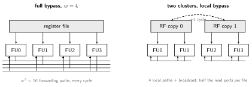
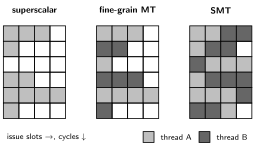

A superscalar processor sustains more than one instruction per cycle: it fetches, decodes, renames, issues, executes, and commits several at once. Where Out of Order Execution and Register Renaming supplies the algorithms, this note is about the machine: what issue width does to every structure, and why width stopped at ~4-8 even as transistor budgets exploded.
The Iron Law view: pipelining attacks cycle time, superscalar attacks CPI, pushing IPC above 1 toward the machine width . Achieved IPC is limited by the program’s instruction-level parallelism (ILP), not the datapath.
The original Pentium (1993) issued 2 instructions per cycle in order, with pairing rules (both simple, no dependence, one memory op) checked at decode; unpaired instructions issued alone. Cheap, but in-order issue means one stalled instruction blocks its pair: real IPC ~1.1-1.4. In-order superscalar survives where energy dominates (little cores, many embedded designs); everything else went out of order.
Fetch must deliver useful instructions per cycle, every cycle:
Decode at width is where ISA encoding matters (RISC-V ISA comparison table): fixed 32-bit instructions decode in parallel trivially; x86’s 1-15 byte instructions need speculative length decoding, so x86 cores split decoders into complex+simple sets and lean on the µop cache. CISC instructions crack into µops; some RISC-like pairs fuse (compare+branch) into one µop.
Everything scales worse than linearly in :
A width-independent design fork hides inside the issue queue: when is the register file read?
Deep pipelines make the bypass worse than suggests: a result must be forwardable from several pipeline stages (ALU output, result drive, writeback) to catch consumers issued 1, 2, or 3 cycles behind, so each of the paths is really several. Two standing simplifications: the FP/SIMD units get a bypass network of their own (integer results almost never feed FP directly), and the memory unit hangs off both.
IBM’s POWER4 and POWER5 shipped with no bypass network at all: dependent integer ops pay a 1-cycle bubble, dependent FP ops six. The designers bought frequency and simplicity, and let out-of-order execution fill the bubbles with independent work, a reminder that every “mandatory” structure is actually a trade.
When the bypass or the register file does threaten the clock, designers climb the clustering ladder, each rung cutting more wire at more IPC cost:

Commit is the pipeline’s other in-order regime: a -wide machine scans a whole ROB row and retires it greedily. The interesting design is recovery, because its two triggers have opposite frequencies. Branch mispredictions are common, so they get the fast path: a rename-map checkpoint per branch, restored in one cycle. Exceptions are rare, so they may take the slow path: wait until the faulting instruction reaches the head, then unwind. BOOM implements both ends configurably: rollback walking the ROB one row per cycle (R10000 style), or an extra committed map table that resets rename state in a single cycle. Its issue queues are equally concrete: separate memory/integer/FP queues (16 entries each at 1/2/1 issue ports in the base configuration), age-ordered by default because the cheaper position-based policy can starve old branches.
Classic limit studies (Wall 1991; H&P) give a perfect-machine ILP of dozens to hundreds, but every realism cut is brutal: finite window, real branch prediction, finite registers, and real memory latency bring sustainable IPC on integer code to ~2-4. Dependence chains are the floor: a pointer chase executes at 1 instruction per load latency no matter the width.
That, plus the structures and the ~1.5-2x energy per instruction of aggressive speculation, is why width plateaued and the transistor budget went to caches and cores instead (History of Computing power wall). Recent cores widened again (Apple M-series ~8-10 wide) by spending enormous µop caches, predictors, and windows to keep a low clock and low voltage: width as an energy play, the inverse of the GHz race.
A single thread cannot fill a wide machine: vertical waste (whole cycles idle, e.g. cache miss) and horizontal waste (some of the slots idle). Multithreading fills waste with other threads’ work:

Costs: threads compete for caches and predictor state (a cache-thrashing sibling can slow the machine), fairness needs explicit fetch policies (ICOUNT: fetch for the thread with fewest µops in flight), and shared-resource leakage created a family of SMT side channels; security-sensitive deployments disable it.
| Core | Year | Width | Depth | Window | Note |
|---|---|---|---|---|---|
| Pentium | 1993 | 2 in-order | 5 | - | pairing rules |
| Pentium Pro | 1995 | 3 | ~12 | 40 | µops + OOO + PRF-in-ROB |
| Pentium 4 | 2000 | 3 | 20-31 | 126 | trace cache, GHz race, power wall |
| Core 2 | 2006 | 4 | 14 | 96 | retreat to efficiency |
| Skylake | 2015 | 4-5 | ~14 | 224 | µop cache, SMT |
| Apple M1 | 2020 | ~8 | ~13 | ~630 | width at low clock |
The P4 → Core 2 reversal is the syllabus in one row: deeper+faster lost to wider+cooler once power became the constraint.
Shrinking transistors made a new failure class architectural: soft errors, bit flips from cosmic-ray neutrons and alpha particles that corrupt state without damaging hardware (rate measured in FIT, failures per hours; it grows with transistor count, so big machines see them daily). The defenses are layered by cost:
Speculation machinery gives OOO cores a cheap trick: an error detected before commit (a parity-failing µop result, a mis-voted structure) can often be handled by the existing squash-and-replay path, turning a potential silent data corruption into a transparent retry.
Author: Sai Govardhan (saigov14@gmail.com)
Courses
Textbooks
Standards, Papers, and Wikipedia
Microarchitecture References
MIT License
Copyright (c) 2025 Sai Govardhan (saigov14@gmail.com)
Permission is hereby granted, free of charge, to any person obtaining a copy
of this software and associated documentation files (the "Software"), to deal
in the Software without restriction, including without limitation the rights
to use, copy, modify, merge, publish, distribute, sublicense, and/or sell
copies of the Software, and to permit persons to whom the Software is
furnished to do so, subject to the following conditions:
The above copyright notice and this permission notice shall be included in all
copies or substantial portions of the Software.
THE SOFTWARE IS PROVIDED "AS IS", WITHOUT WARRANTY OF ANY KIND, EXPRESS OR
IMPLIED, INCLUDING BUT NOT LIMITED TO THE WARRANTIES OF MERCHANTABILITY,
FITNESS FOR A PARTICULAR PURPOSE AND NONINFRINGEMENT. IN NO EVENT SHALL THE
AUTHORS OR COPYRIGHT HOLDERS BE LIABLE FOR ANY CLAIM, DAMAGES OR OTHER
LIABILITY, WHETHER IN AN ACTION OF CONTRACT, TORT OR OTHERWISE, ARISING FROM,
OUT OF OR IN CONNECTION WITH THE SOFTWARE OR THE USE OR OTHER DEALINGS IN THE
SOFTWARE.